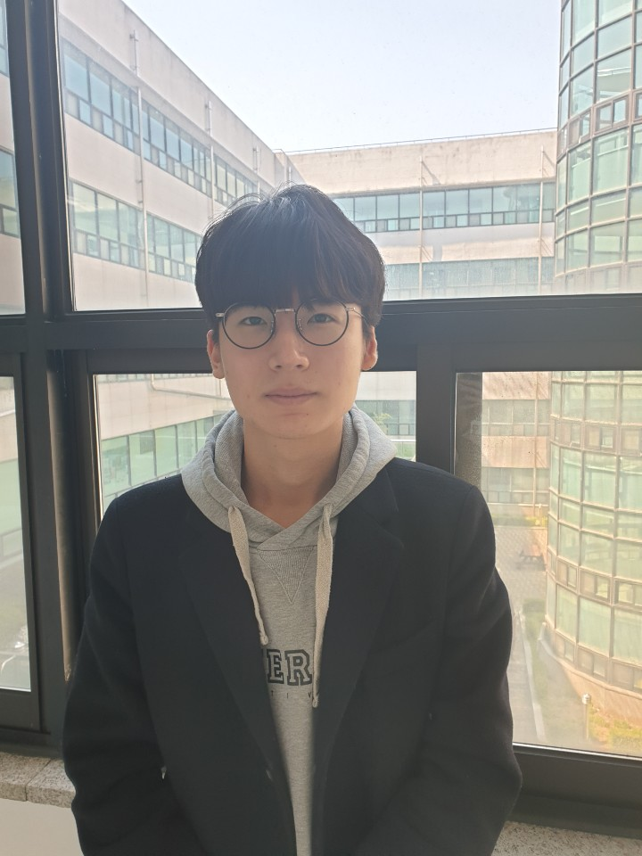

자기소개
저는 한신대학교 컴퓨터학과를 졸업하고 게임프로그래밍 분야에 관심을 갖고 있는 한동연입니다. 평소 프로그래밍을 즐겨하였고 특히, 게임 개발 기술 관련하여 Unity, LSD등 의 프로그램을 적극적으로 배우고싶으며, 만약 기회가 된다면 한신대학교의 한 특색인 IPP(장기현장실습)을 통해 회사 인턴쉽 생활을 경험 하고싶습니다. 또한, 강의를 들을 때 미쳐 채우지 못했던 부족한 점들을 인턴쉽 생활을 통해 보완했으면 하는 바람입니다. 이를 기반으로 항상 어떤 환경에서도 최선을 다하고 즐기는 마음으로 열심히 일하고자 합니다.
특이사항
- 왼쪽 귀가 청력이 좋지 않음.(오른쪽이 10이면 왼쪽은 3~4정도)